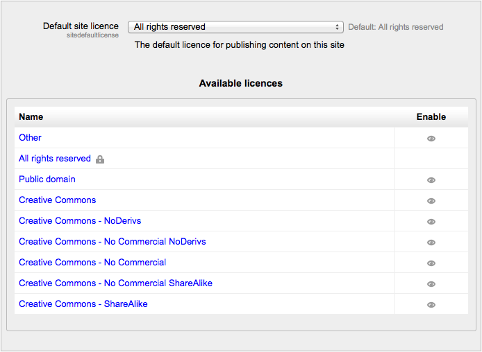

An administrator can enable any/all of the following licences in Settings > Site administration > Plugins > Licences > Manage licences for user selection when publishing a course to a Community Hub or uploading a file to a File Repository.
- The default licence is All Right reserved All rights reserved but this may be changed in the dropdown. The other options are explained in the links below:
- All rights reserved (default option)
- Public domain
- Creative Commons
- Creative Commons - NoDerivs
- Creative Commons - No Commercial NoDerivs
- Creative Commons - No Commercial
- Creative Commons - No Commercial ShareAlike
- Creative Commons - ShareAlike
- Other - licence not already listed

Note: The licence given to a file when uploaded to Moodle does not in any way affect its visibility on a course. It simply creates the default when it is being re-used elsewhere. This default licence can be changed at the time of display.